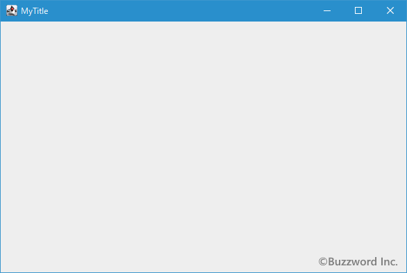
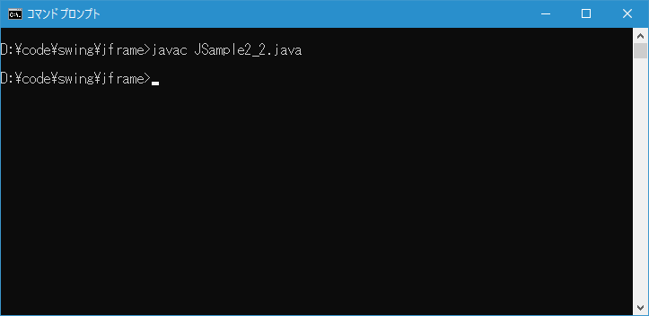
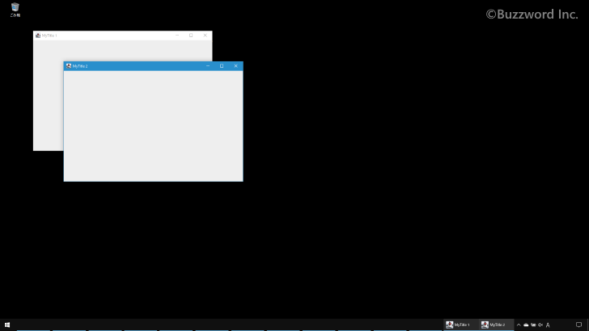

フレームのサイズと表示位置を設定する
JFrame クラスのオブジェクトを作成した場合、サイズの設定を行うまでは幅も高さもサイズは 0 に設定されています。ここではフレームのサイズを設定する方法、およびフレームが表示される位置を移動する方法について解説します。
フレームのサイズを設定する
フレームのサイズを設定するには JFrame クラスの親クラスである Window クラスで定義されている setSize メソッドを使います。
public void setSize(int width, int height)
幅がwidthで、高さがheightになるように、このコンポーネントのサイズを変更します。
このメソッドではレイアウトに関連する情報が変更されるため、コンポーネント階層が無効になります。
widthおよびheight値は、どちらかが直前のsetMinimumSizeの呼出しによって指定された最小サイズより小さい場合、自動的に大きくなります。
このメソッドは、幾何学的図形に関連するデータを変更します。 そのため、Windowオブジェクトがデスクトップ設定に厳密に対応する方法で配置およびサイズ設定されるように、ネイティブ・ウィンドウ管理システムはこのような要求を無視するか、または要求されたデータを変更する可能性があります。
オーバーライド:
setSize、クラス: Component
パラメータ:
width - このコンポーネントの新しい幅(ピクセル単位)
height - このコンポーネントの新しい高さ(ピクセル単位)
1 番目の引数にフレームの幅を指定し、 2 番目の引数にフレームの高さを指定します。いずれも単位はピクセルです。
実際の使い方は次のようになります。フレームの幅を 300 ピクセル、高さを 200 ピクセルに設定しています。
JFrame frame = new JFrame("MyTitle");
frame.setSize(300, 200);
サンプルプログラム
それでは簡単なサンプルプログラムを作って試してみます。テキストエディタで次のように記述したあと、 JSample2_1.java という名前で保存します。
import javax.swing.JFrame;
class JSample2_1{
public static void main(String args[]){
JFrame frame = new JFrame("MyTitle");
frame.setSize(600, 400);
frame.setVisible(true);
}
}
次のようにコンパイルを行います。
javac JSample2_1.java
コンパイルが終わりましたら実行します。
java JSample2_1
次のようなフレームが表示されます。

フレームが指定したサイズに設定されて表示されました。(実際には指定した幅と高さよりも少し小さいようです)。
フレームを指定した位置に移動する
フレームを指定した座標に移動するには JFrame クラスの親クラスである Window クラスで定義されている setLocation メソッドを使います。
public void setLocation(int x, int y)
このコンポーネントを新しい位置に移動します。 新しい位置の左上隅は、このコンポーネントの親の座標空間内のxおよびyパラメータによって指定されます。
このメソッドではレイアウトに関連する情報が変更されるため、コンポーネント階層が無効になります。
このメソッドは、幾何学的図形に関連するデータを変更します。 そのため、Windowオブジェクトがデスクトップ設定に厳密に対応する方法で配置およびサイズ設定されるように、ネイティブ・ウィンドウ管理システムはこのような要求を無視するか、または要求されたデータを変更する可能性があります。
オーバーライド:
setLocation 、クラス: Component
パラメータ:
x - 親の座標空間内の新しい位置の左上隅のx座標
y - 親の座標空間内の新しい位置の左上隅のy座標
1 番目の引数にフレームの左上隅の x 座標を指定し、 2 番目の引数にフレームの左上隅の y 座標を指定します。座標は Windows 画面の左上隅を起点 (0,0) とし、右方向が x 座標、下方向が y 座標で指定します。
実際の使い方は次のようになります。フレームの左上隅の座標が (200, 10) になるように移動しています。
JFrame frame = new JFrame("MyTitle");
frame.setLocation(200, 10);
サンプルプログラム
それでは簡単なサンプルプログラムを作って試してみます。テキストエディタで次のように記述したあと、 JSample2_2.java という名前で保存します。
import javax.swing.JFrame;
class JSample2_2{
public static void main(String args[]){
JFrame frame1 = new JFrame("MyTitle 1");
frame1.setSize(600, 400);
frame1.setLocation(100, 100);
frame1.setVisible(true);
JFrame frame2 = new JFrame("MyTitle 2");
frame2.setSize(600, 400);
frame2.setLocation(200, 200);
frame2.setVisible(true);
}
}
次のようにコンパイルを行います。
javac JSample2_2.java

コンパイルが終わりましたら実行します。
java JSample2_2
次のように 2 つのフレームが表示され、それぞれ指定した位置に移動します。

フレームのサイズと位置をまとめて設定する
フレームのサイズと表示する位置をまとめて設定するには JFrame クラスの親クラスである Window クラスで定義されている setBounds メソッドを使います。
public void setBounds(int x, int y, int width, int height)
このコンポーネントを移動し、サイズ変更します。 左上隅の新しい位置はxとyによって指定され、新しいサイズはwidthとheightによって指定されます。
このメソッドではレイアウトに関連する情報が変更されるため、コンポーネント階層が無効になります。
widthまたはheight値は、どちらかが直前のsetMinimumSizeの呼出しによって指定された最小サイズより小さい場合、自動的に大きくなります。
このメソッドは、幾何学的図形に関連するデータを変更します。 そのため、Windowオブジェクトがデスクトップ設定に厳密に対応する方法で配置およびサイズ設定されるように、ネイティブ・ウィンドウ管理システムはこのような要求を無視するか、または要求されたデータを変更する可能性があります。
オーバーライド:
setBounds、クラス: Component
パラメータ:
x - このコンポーネントの新しいx座標
y - このコンポーネントの新しいy座標
width - このコンポーネントの新しい幅
height - このコンポーネントの新しい高さ
1 番目の引数にフレームの左上隅の x 座標を指定し、 2 番目の引数にフレームの左上隅の y 座標を指定します。そして 3 番目の引数にフレームの幅を指定し、 4 番目の引数にフレームの高さを指定します。いずれも単位はピクセルです。座標は Windows 画面の左上隅を起点 (0,0) とし、右方向が x 座標、下方向が y 座標で指定します。
実際の使い方は次のようになります。フレームの幅を 300 ピクセル、高さを 200 ピクセルに設定し、フレームの左上隅の座標が (200, 10) になるように移動しています。
JFrame frame = new JFrame("MyTitle");
frame.setBounds(200, 10. 300, 200);
サンプルプログラム
それでは簡単なサンプルプログラムを作って試してみます。テキストエディタで次のように記述したあと、 JSample2_3.java という名前で保存します。
import javax.swing.JFrame;
class JSample2_3{
public static void main(String args[]){
JFrame frame1 = new JFrame("MyTitle 1");
frame1.setBounds(100, 100, 600, 400);
frame1.setVisible(true);
JFrame frame2 = new JFrame("MyTitle 2");
frame2.setBounds(200, 200, 600, 400);
frame2.setVisible(true);
}
}
次のようにコンパイルを行います。
javac JSample2_3.java
コンパイルが終わりましたら実行します。
java JSample2_3
次のように 2 つのフレームが表示され、それぞれ指定したサイズに設定されたあとで指定した位置に移動します。
-- --
フレームのサイズを設定する方法、およびフレームが表示される位置を移動する方法について解説しました。
( Written by Tatsuo Ikura )

著者 / TATSUO IKURA
初心者～中級者の方を対象としたプログラミング方法や開発環境の構築の解説を行うサイトの運営を行っています。